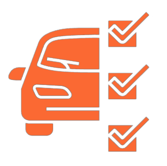

Оформление КАСКО/ОСАГО
Что требуется для техосмотра:
- Транспортное средство, которое будет проходить техосмотр
- Свидетельство о регистрации транспортного средства или ПТС
- Связаться с нами и записаться на удобное для вас время и место

Преимущества диагностики у нас
Используется высококачественное оборудование, которое регулярно проверяется
Проводится лицензированным экспертом
После прохождения техосмотра все данные попадают в базу ЕАИСТО ГИБДД
Занимает в среднем 15 минут
Автомобиль проверяется по всем пунктам согласно ФЗ

Вы получаете диагностическую карту с отметкой о прохождении техосмотра

Пример нашей диагностической карты
Аттестат аккредитации
Процесс прохождения техосмотра

Техосмотр легкового автомобиля
Техосмотр легковых автомобилей в наших представительствах организован с максимальным комфортом для владельцев автотранспорта
Все неисправности и дефекты, найденные при техосмотре легкового автомобиля будут отмечены в диагностической карте. В случае неудовлетворительного заключения вам необходимо будет сначала привести автомобиль в надлежащее состояние. И уже после ремонта пройти процедуру ТО повторно
Специалисты проверяют работоспособность трансмиссии, производят запуск двигателя. Присутствие сторонних стуков, вибрации и скрежета говорит о наличии поломок
Все неисправности и дефекты, найденные при техосмотре легкового автомобиля будут отмечены в диагностической карте. В случае неудовлетворительного заключения вам необходимо будет сначала привести автомобиль в надлежащее состояние. И уже после ремонта пройти процедуру ТО повторно
Специалисты проверяют работоспособность трансмиссии, производят запуск двигателя. Присутствие сторонних стуков, вибрации и скрежета говорит о наличии поломок
Стоимость 1500 руб.
Техосмотр мототранспорта
Техосмотр мототранспорта в наших представительствах организован с максимальным комфортом. Выберете станцию соотвествующую вашей категории ТС
Все неисправности и дефекты, найденные при техосмотре мототранспорта будут отмечены в диагностической карте. В случае неудовлетворительного заключения вам необходимо будет сначала привести автомобиль в надлежащее состояние. И уже после ремонта пройти процедуру ТО повторно
Специалисты проверяют ТС строго в соответствии с техническим регламентом
Все неисправности и дефекты, найденные при техосмотре мототранспорта будут отмечены в диагностической карте. В случае неудовлетворительного заключения вам необходимо будет сначала привести автомобиль в надлежащее состояние. И уже после ремонта пройти процедуру ТО повторно
Специалисты проверяют ТС строго в соответствии с техническим регламентом
Стоимость 1000 руб.
Техосмотр автобуса
Техосмотр автобуса в наших представительствах организован с максимальным комфортом. Выберете станцию соотвествующую вашей категории ТС
Все неисправности и дефекты, найденные при техосмотре автобуса будут отмечены в диагностической карте. В случае неудовлетворительного заключения вам необходимо будет сначала привести автомобиль в надлежащее состояние. И уже после ремонта пройти процедуру ТО повторно
Специалисты проверяют ТС строго в соответствии с техническим регламентом
Все неисправности и дефекты, найденные при техосмотре автобуса будут отмечены в диагностической карте. В случае неудовлетворительного заключения вам необходимо будет сначала привести автомобиль в надлежащее состояние. И уже после ремонта пройти процедуру ТО повторно
Специалисты проверяют ТС строго в соответствии с техническим регламентом
Стоимость 5000 руб.
Техосмотр грузового прицепа
Техосмотр грузового прицепа в наших представительствах организован с максимальным комфортом. Выберете станцию соотвествующую вашей категории ТС
Все неисправности и дефекты, найденные при техосмотре грузового прицепа будут отмечены в диагностической карте. В случае неудовлетворительного заключения вам необходимо будет сначала привести автомобиль в надлежащее состояние. И уже после ремонта пройти процедуру ТО повторно
Специалисты проверяют ТС строго в соответствии с техническим регламентом
Все неисправности и дефекты, найденные при техосмотре грузового прицепа будут отмечены в диагностической карте. В случае неудовлетворительного заключения вам необходимо будет сначала привести автомобиль в надлежащее состояние. И уже после ремонта пройти процедуру ТО повторно
Специалисты проверяют ТС строго в соответствии с техническим регламентом
Стоимость 1800 руб.
Техосмотр грузового автомобиля
Техосмотр грузового автомобиля в наших представительствах организован с максимальным комфортом. Выберете станцию соотвествующую вашей категории ТС
Все неисправности и дефекты, найденные при техосмотре грузового автомобиля будут отмечены в диагностической карте. В случае неудовлетворительного заключения вам необходимо будет сначала привести автомобиль в надлежащее состояние. И уже после ремонта пройти процедуру ТО повторно
Специалисты проверяют ТС строго в соответствии с техническим регламентом
Все неисправности и дефекты, найденные при техосмотре грузового автомобиля будут отмечены в диагностической карте. В случае неудовлетворительного заключения вам необходимо будет сначала привести автомобиль в надлежащее состояние. И уже после ремонта пройти процедуру ТО повторно
Специалисты проверяют ТС строго в соответствии с техническим регламентом
Стоимость 3000 руб.
Что мы проверяем при техосмотре
!
- 1. Тормозная система — эксперт диагностирует рабочие цилиндры, патрубки, соединительные элементы. Они замеряют уровень тормозной жидкости, износ колодок, систему рулевого управления
- 2. Внешние приборы — при прохождении техосмотра включаются лампы ближнего и дальнего света, дубликаторы поворота, дневные ходовые огни. Осветительные приборы должны работать в штатном режиме, наличие неисправных элементов неприемлемо. Установка нештатных осветительных приборов — запрещается
- 3. Шины — проходить проверку следует на резине, соответствующей сезону. Покрышки должны иметь одинаковый протектор и равномерный износ. Не допускается присутствие проколов и деформаций
- 4. Замки — проверяется исправность всех запорных механизмов. Производится контрольное открытие багажника, дверей, капота
- 5. Стеклоомыватели — Выполняется активация дворников и подающего насоса. Бачок со стеклоомывающей жидкостью должен быть заправлен
- 6. Исправность КПП и ДВС
Периодичность проведения ТО
| Возраст автомобиля | B (M1, N1), A (L-мото), O - прицепы | кат. С, кат. Д, такси, учебные авто со спецсигналами | Опасные грузы |
|---|---|---|---|
| 0-4 года | Не проводится | Техосмотр выдается на 1 год | Техосмотр выдается на 6 мес. |
| от 4 лет | Техосмотр выдается на 2 года | Техосмотр выдается на 1 год | Техосмотр выдается на 6 мес. |
| 5-9 лет | Техосмотр выдается на 2 года | Техосмотр выдается на 6 мес. | Техосмотр выдается на 6 мес. |
| 10 лет и более | Техосмотр выдается на 1 год | Техосмотр выдается на 6 мес. | Техосмотр выдается на 6 мес. |
Регламент техосмотра автомобиля
1. Тормозные системы
1. Соответствие показателей эффективности торможения и устойчивости торможения
2. Соответствие разности тормозных сил установленным требованиям
3. Работоспособность рабочей тормозной системы автопоездов с пневматическим тормозным приводом в режиме аварийного (автоматического) торможения
4. Отсутствие утечек сжатого воздуха из колесных тормозных камер
5. Отсутствие подтеканий тормозной жидкости, нарушения герметичности трубопроводов или соединений в гидравлическом тормозном приводе
6. Отсутствие коррозии, грозящей потерей герметичности или разрушением
7. Отсутствие механических повреждений тормозных трубопроводов
8. Отсутствие трещин остаточной деформации деталей тормозного привода
9. Исправность средств сигнализации и контроля тормозных систем
10. Отсутствие набухания тормозных шлангов под давлением, трещин и видимых мест перетирания
11. Расположение и длина соединительных шлангов пневматического тормозного привода автопоездов
2. Соответствие разности тормозных сил установленным требованиям
3. Работоспособность рабочей тормозной системы автопоездов с пневматическим тормозным приводом в режиме аварийного (автоматического) торможения
4. Отсутствие утечек сжатого воздуха из колесных тормозных камер
5. Отсутствие подтеканий тормозной жидкости, нарушения герметичности трубопроводов или соединений в гидравлическом тормозном приводе
6. Отсутствие коррозии, грозящей потерей герметичности или разрушением
7. Отсутствие механических повреждений тормозных трубопроводов
8. Отсутствие трещин остаточной деформации деталей тормозного привода
9. Исправность средств сигнализации и контроля тормозных систем
10. Отсутствие набухания тормозных шлангов под давлением, трещин и видимых мест перетирания
11. Расположение и длина соединительных шлангов пневматического тормозного привода автопоездов
2. Рулевое управление
1. Работоспособность усилителя рулевого управления. Плавность изменения усилия при повороте рулевого колеса
2. Отсутствие самопроизвольного поворота рулевого колеса с усилителем рулевого управления от нейтрального положения при работающем двигателе
3. Отсутствие превышения предельных значений суммарного люфта в рулевом управлении
4. Отсутствие повреждения и полная комплектность деталей крепления рулевой колонки и картера рулевого механизма
5. Отсутствие следов остаточной деформации, трещин и других дефектов в рулевом механизме и рулевом приводе
6. Отсутствие устройств, ограничивающих поворот рулевого колеса, не предусмотренных конструкцией
2. Отсутствие самопроизвольного поворота рулевого колеса с усилителем рулевого управления от нейтрального положения при работающем двигателе
3. Отсутствие превышения предельных значений суммарного люфта в рулевом управлении
4. Отсутствие повреждения и полная комплектность деталей крепления рулевой колонки и картера рулевого механизма
5. Отсутствие следов остаточной деформации, трещин и других дефектов в рулевом механизме и рулевом приводе
6. Отсутствие устройств, ограничивающих поворот рулевого колеса, не предусмотренных конструкцией
3. Внешние световые приборы
1. Соответствие устройств освещения и световой сигнализации установленным требованиям
2. Отсутствие разрушений рассеивателей световых приборов
3. Работоспособность и режим работы сигналов торможения
4. Соответствие углов регулировки и силы света фар установленным требованиям
5. Наличие и расположение фар и сигнальных фонарей в местах, предусмотренных конструкцией
6. Соответствие источника света в фарах, формы, цвета и размера фар. Наличие светоотражающей контурной маркировки, отсутствие её повреждений и отслоения
2. Отсутствие разрушений рассеивателей световых приборов
3. Работоспособность и режим работы сигналов торможения
4. Соответствие углов регулировки и силы света фар установленным требованиям
5. Наличие и расположение фар и сигнальных фонарей в местах, предусмотренных конструкцией
6. Соответствие источника света в фарах, формы, цвета и размера фар. Наличие светоотражающей контурной маркировки, отсутствие её повреждений и отслоения
4. Стеклоочистители и стеклоомыватели
1. Наличие стеклоочистителя и форсунки стеклоомывателя ветрового стекла
2. Обеспечение стеклоомывателем подачи жидкости в зоны очистки стекла
3. Работоспособность стеклоочистителей и стеклоомывателей
2. Обеспечение стеклоомывателем подачи жидкости в зоны очистки стекла
3. Работоспособность стеклоочистителей и стеклоомывателей
5. Шины и колеса
1. Соответствие высоты рисунка протектора шин установленным требованиям
2. Отсутствие признаков непригодности шин к эксплуатации
3. Наличие всех болтов или гаек крепления дисков и ободьев колес
4. Отсутствие трещин на дисках и ободьях колес
5. Отсутствие видимых нарушений формы и размеров крепежных отверстий в дисках колес
6. Установка шин на транспортное средство в соответствии с требованиями
2. Отсутствие признаков непригодности шин к эксплуатации
3. Наличие всех болтов или гаек крепления дисков и ободьев колес
4. Отсутствие трещин на дисках и ободьях колес
5. Отсутствие видимых нарушений формы и размеров крепежных отверстий в дисках колес
6. Установка шин на транспортное средство в соответствии с требованиями
6. Двигатель и его системы
1. Соответствие содержания загрязняющих веществ в отработавших газахтранспортных средств установленным требованиям
2. Отсутствие подтекания и каплепадения топлива в системе питания
3. Работоспособность запорных устройств и устройств перекрытия топлива
4. Герметичность системы питания транспортных средств, работающих на газе. Соответствие газовых баллонов установленным требованиям
5. Соответствие нормам уровня шума выпускной системы
2. Отсутствие подтекания и каплепадения топлива в системе питания
3. Работоспособность запорных устройств и устройств перекрытия топлива
4. Герметичность системы питания транспортных средств, работающих на газе. Соответствие газовых баллонов установленным требованиям
5. Соответствие нормам уровня шума выпускной системы
7. Прочие элементы конструкции
1. Наличие зеркал заднего вида в соответствии с требованиями
2. Отсутствие дополнительных предметов или покрытий, ограничивающих обзорность с места водителя. Соответствие полосы пленки в верхней части ветрового стекла установленным требованиям
3. Соответствие норме светопропускания ветрового стекла, передних боковых стекол и стекол передних дверей
4. Отсутствие трещин на ветровом стекле в зоне очистки водительского стеклоочистителя
5. Работоспособность замков дверей кузова, кабины, механизмов регулировки и фиксирующих устройств сидений, устройства обогрева и обдува ветрового стекла, противоугонного устройства
6. Работоспособность запоров бортов грузовой платформы и запоров горловин цистерн
7. Работоспособность аварийного выключателя дверей и сигнала требования остановки
8. Работоспособность аварийных выходов, приборов внутреннего освещения салона, привода управления — дверями и сигнализации их работы
9. Наличие работоспособного звукового сигнального прибора
10. Наличие обозначений аварийных выходов и табличек по правилам их использования. Обеспечение свободного — доступа к аварийным выходам
11. Наличие задних и боковых защитных устройств, соответствие их нормам
12. Работоспособность автоматического замка, ручной и автоматической блокировки седельно-сцепного устройства. Отсутствие видимых повреждений сцепных устройств
13. Наличие работоспособных предохранительных приспособлений у одноосных прицепов (за исключением роспусков) и прицепов, не оборудованных рабочей тормозной системой
14. Оборудование прицепов (за исключением одноосных и роспусков) исправным устройством, поддерживающим сцепную петлю дышла в положении, облегчающем сцепку и расцепку с тяговым автомобилем
15. Отсутствие продольного люфта в беззазорных тягово- сцепных устройствах с тяговой вилкой для сцепленного с — прицепом тягача
16. Обеспечение тягово-сцепными устройствами легковых автомобилей беззазорной сцепки сухарей замкового устройства с шаром
17. Соответствие размерных характеристик сцепных устройств установленным требованиям
18. Оснащение транспортных средств исправными ремнями безопасности
19. Наличие знака аварийной остановки и медицинской аптечки
20. Наличие не менее двух противооткатных упоров
21. Наличие огнетушителей, соответствующих установленным требованиям
22. Надежное крепление поручней в автобусах, запасного колеса, аккумуляторной батареи, сидений, огнетушителей и — медицинской аптечки
23. Работоспособность механизмов регулировки сидений
24. Наличие надколесных грязезащитных устройств, отвечающих установленным требованиям
25. Соответствие вертикальной статической нагрузки на тяговое — устройство автомобиля от сцепной петли одноосного — прицепа (прицепа-роспуска) нормам
26. Работоспособность держателя запасного колеса, лебедки и механизма подъема-опускания запасного колеса
27. Работоспособность механизмов подъема и опускания опор и фиксаторов транспортного положения опор
28. Отсутствие каплепадения масел и рабочих жидкостей
29. Остановка государственных регистрационных знаков в соответствии с требованиями
30. Работоспособность устройства или системы вызова экстренных оперативных служб
31. Отсутствие изменений в конструкции транспортного средства, внесенных в нарушение установленных требований
32. Соответствие транспортного средства установленным дополнительным требованиям
33. Наличие работоспособного тахографа или работоспособного контрольного устройства (тахографа)
2. Отсутствие дополнительных предметов или покрытий, ограничивающих обзорность с места водителя. Соответствие полосы пленки в верхней части ветрового стекла установленным требованиям
3. Соответствие норме светопропускания ветрового стекла, передних боковых стекол и стекол передних дверей
4. Отсутствие трещин на ветровом стекле в зоне очистки водительского стеклоочистителя
5. Работоспособность замков дверей кузова, кабины, механизмов регулировки и фиксирующих устройств сидений, устройства обогрева и обдува ветрового стекла, противоугонного устройства
6. Работоспособность запоров бортов грузовой платформы и запоров горловин цистерн
7. Работоспособность аварийного выключателя дверей и сигнала требования остановки
8. Работоспособность аварийных выходов, приборов внутреннего освещения салона, привода управления — дверями и сигнализации их работы
9. Наличие работоспособного звукового сигнального прибора
10. Наличие обозначений аварийных выходов и табличек по правилам их использования. Обеспечение свободного — доступа к аварийным выходам
11. Наличие задних и боковых защитных устройств, соответствие их нормам
12. Работоспособность автоматического замка, ручной и автоматической блокировки седельно-сцепного устройства. Отсутствие видимых повреждений сцепных устройств
13. Наличие работоспособных предохранительных приспособлений у одноосных прицепов (за исключением роспусков) и прицепов, не оборудованных рабочей тормозной системой
14. Оборудование прицепов (за исключением одноосных и роспусков) исправным устройством, поддерживающим сцепную петлю дышла в положении, облегчающем сцепку и расцепку с тяговым автомобилем
15. Отсутствие продольного люфта в беззазорных тягово- сцепных устройствах с тяговой вилкой для сцепленного с — прицепом тягача
16. Обеспечение тягово-сцепными устройствами легковых автомобилей беззазорной сцепки сухарей замкового устройства с шаром
17. Соответствие размерных характеристик сцепных устройств установленным требованиям
18. Оснащение транспортных средств исправными ремнями безопасности
19. Наличие знака аварийной остановки и медицинской аптечки
20. Наличие не менее двух противооткатных упоров
21. Наличие огнетушителей, соответствующих установленным требованиям
22. Надежное крепление поручней в автобусах, запасного колеса, аккумуляторной батареи, сидений, огнетушителей и — медицинской аптечки
23. Работоспособность механизмов регулировки сидений
24. Наличие надколесных грязезащитных устройств, отвечающих установленным требованиям
25. Соответствие вертикальной статической нагрузки на тяговое — устройство автомобиля от сцепной петли одноосного — прицепа (прицепа-роспуска) нормам
26. Работоспособность держателя запасного колеса, лебедки и механизма подъема-опускания запасного колеса
27. Работоспособность механизмов подъема и опускания опор и фиксаторов транспортного положения опор
28. Отсутствие каплепадения масел и рабочих жидкостей
29. Остановка государственных регистрационных знаков в соответствии с требованиями
30. Работоспособность устройства или системы вызова экстренных оперативных служб
31. Отсутствие изменений в конструкции транспортного средства, внесенных в нарушение установленных требований
32. Соответствие транспортного средства установленным дополнительным требованиям
33. Наличие работоспособного тахографа или работоспособного контрольного устройства (тахографа)
Остались вопросы?